EMMANUEL OCHIENG OKELLO
I am skilled in a wide range of electrical applications and soft skills as well. Some of my technical skills include;
Technical skills
Low Voltage Systems
I have a solid understanding of low voltage systems with skills in the following areas;
Low voltage panels
I have experience in designing, assembling, wiring and testing low voltage panels. I have worked with different types of panels including motor control centers, distribution boards, and control panels.

UPS
I have experience in setting up UPS systems.

Earthing systems
I have experience in setting up earthing systems. I can design, install and test earthing systems.

Industrial Automation
I have taken a level one course in industrial automation with Viscar Industrial Capacity ltd. This entailed a myriad of different technologies including;
PLCs
I am well versed with PLCs. Some of the PLCs I have interacted with are Siemens and Kinco. Software programs I have used are Simatic manager v5.6, TIA portal V18
HMIs
I have also interacted with HMIs, and can comfortably set them up. I can also program PLCs from the HMI interface.
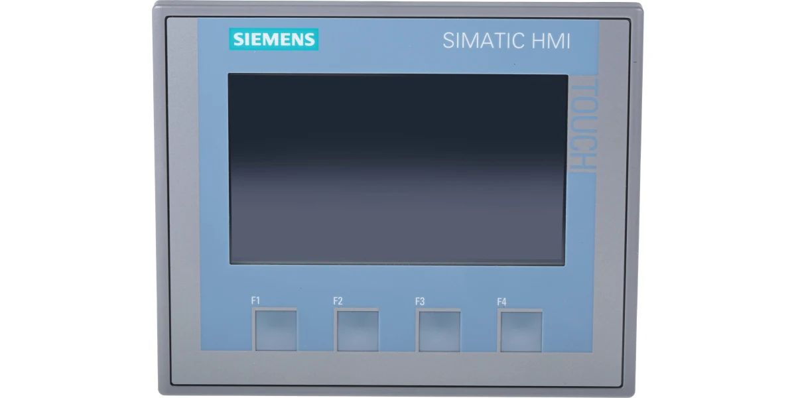SCADA
In my training, I also learned about SCADA systems and how to apply them in matters controls via Siemens Wincc panel
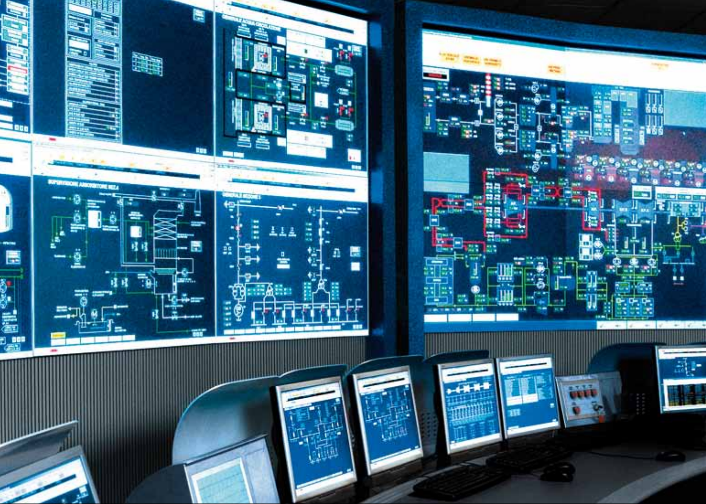Fluid Power Systems
Pneumatics
I have a firm grasp on pneumatic systems, from setting up the compressor, wiring valves, and wiring actuators. I also have the skills to wire electropneumatic systems control that employ controlvia relays or PLCs.
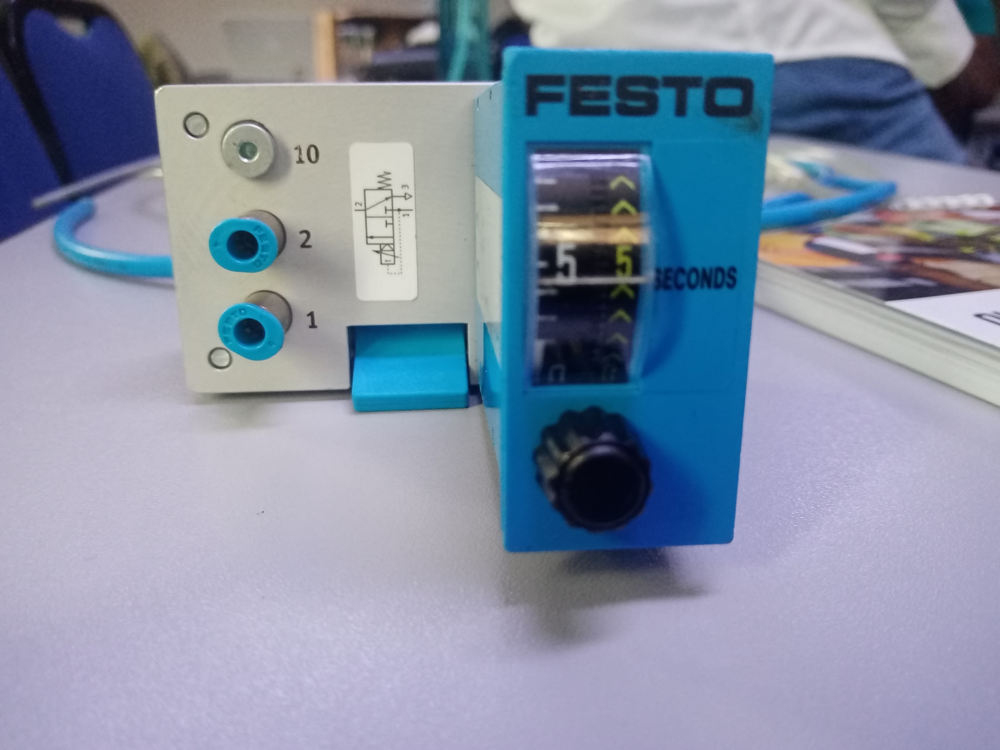Hydraulics
I also have experience with hydraulic systems, from setting up the power unit system, wiring valves, and wiring actuators. I also have the skills to wire electrohydraulic systems control that employ control via relays or PLCs.
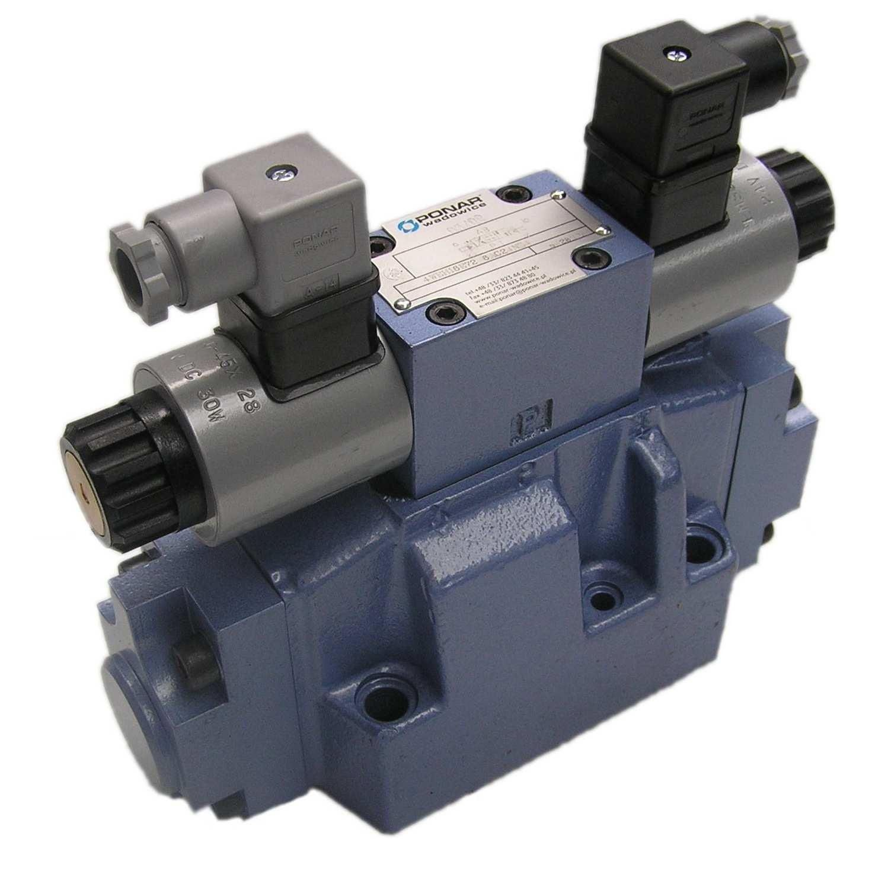Networking
I am conversant with different international standards as with regards to networking. I am aware of standards and protocols applied to industrial equipment. I have interacted with different media such as;
Ethernet
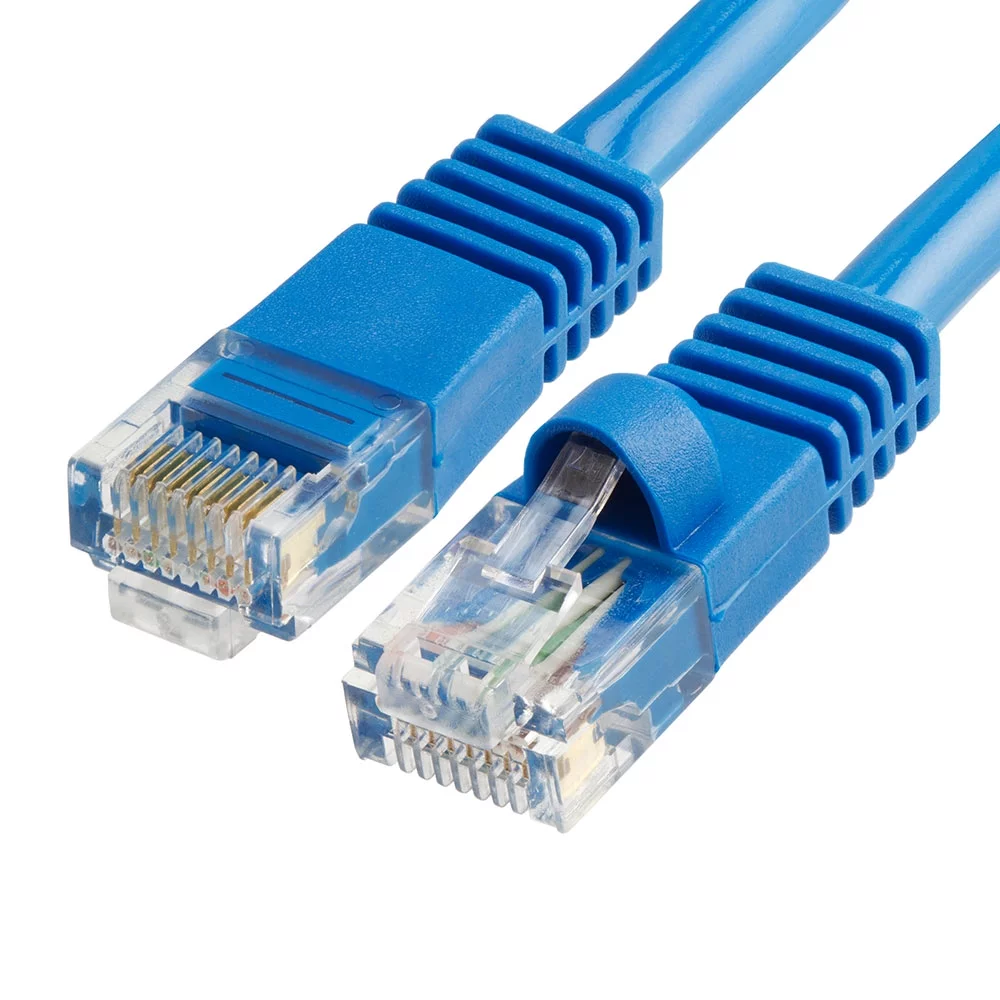USB-MPI
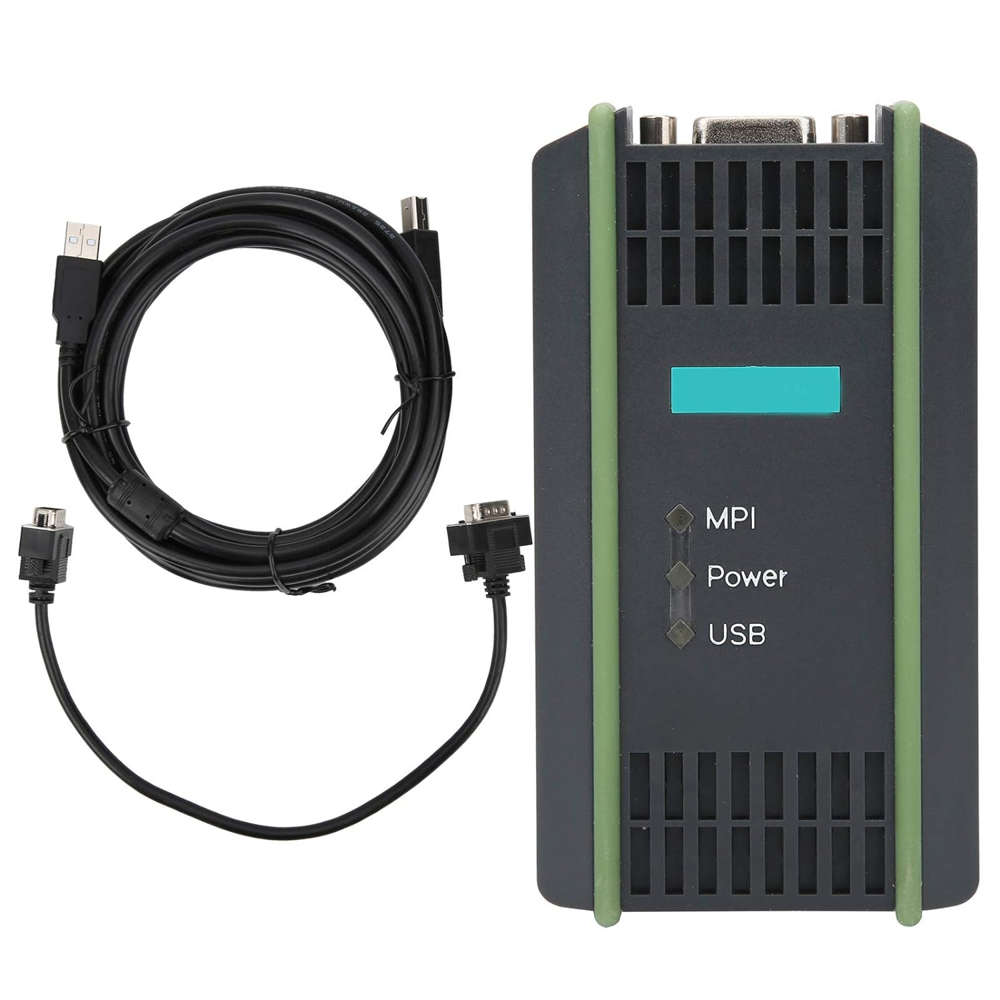Profibus
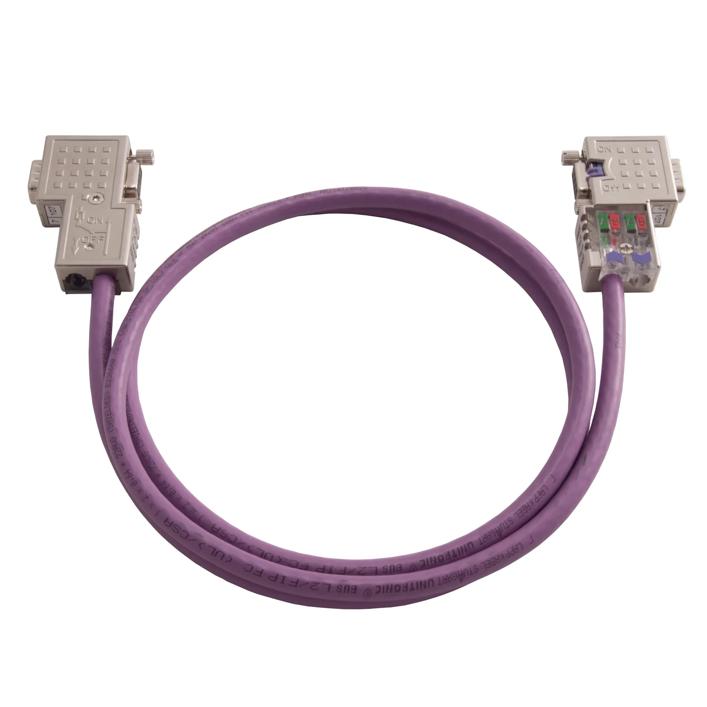Fieldbus
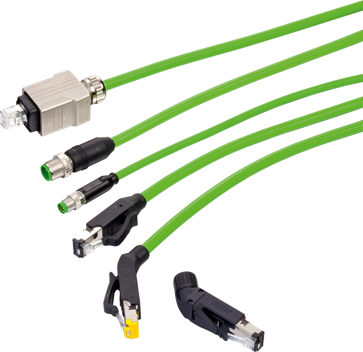Variable frequency drives
I can install, commission and parameterize VFDs.
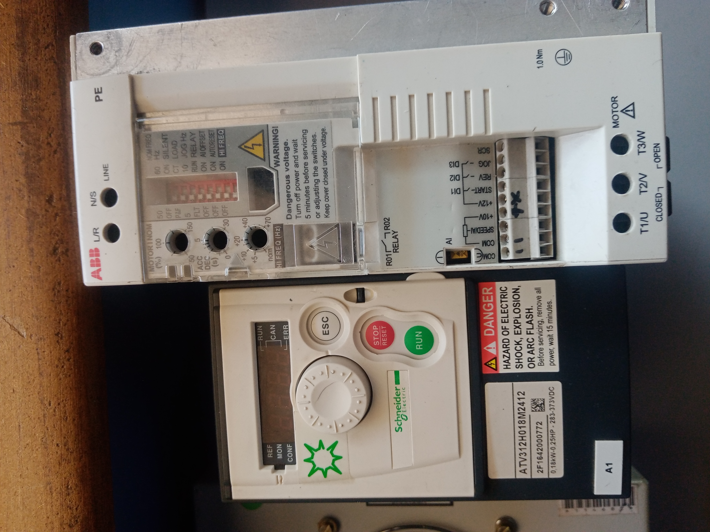Electronic troubleshooting
I am able to carry out basic troubleshooting of electronic devices ranging from detecting faulty circuits to basic soldering applications
Electrical Power Engineering
I have a solid understanding of electrical power systems with skills in the following areas
Power Distribution
Having worked with Kenya Power as an attachee, I gained numerous skills in power distribution. From 3-phase distribution systems, MV and LV systems, Design and Construction of Power line circuits, Operation and Maintainance of power distribution systems, and customer support and care.
Electrician services
I have worked extensively as an electrician and can come up with electrical systems. I am also currently working towards certification of the same with EPRA. As an electrician, I can do the following;
- ✅Conduit installations
- ✅Transformer installations
- ✅Circuit breaker installations
- ✅Lighting installations
- ✅Switchboard installations
- ✅Leak detection and fixing
- ✅Fire protection installations
- ✅Overcurrent protection installations
- ✅Power quality monitoring installations
- ✅Power fault finding and correction
- ✅Power supply installations
- ✅Load center installations
- ✅Load center maintenance
- ✅Power distribution system installations
- ✅Power distribution system maintenance
- ✅Customer support and care
- ✅Customer service
- ✅Customer education
Web design and Programming
I am skilled in web design and programming. You can access some of my projects on my github page.
Softwares
TIA v18

Fluidsim Pneumatic/Hydraulic
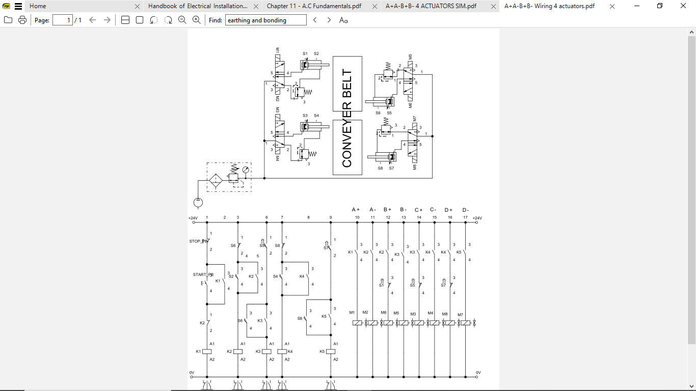EPLAN Electric P8
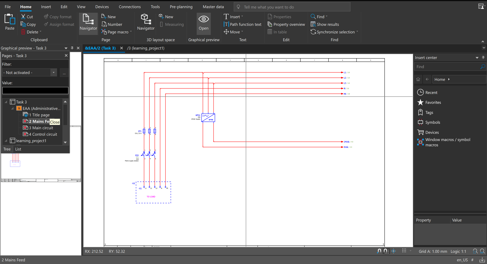Soft Skills
Communication
I am adept at effective communication, both in person and through digital platforms. I can convey my ideas clearly and effectively to others.
Teamwork
I am adept at working with a team, both individually and as a team. I can facilitate collaboration and ensure that everyone's ideas are heard and implemented. I have implemented this in varrious construction sites where we had to deliver projects with professionals from other companies
Resilience
I am a strong and resilient individual. I can handle difficult situations and maintain a positive attitude.
Adaptability
I am adept at adapting to new situations and changing my approach as needed.
Problem-solving
I am adept at identifying and solving problems. I can think creatively and come up with solutions.
Persistence
I am a strong and consistent individual. I can stay committed to my goals and achieve them.
Patience
I am a strong and patient individual. I can wait patiently and make time for myself.
Innovation
I am a strong and innovative individual. I can think outside the box and come up with new ideas.
Leadership
I love taking charge and being responible for teams and harmonizing effective measures to deliver projects